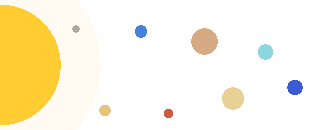

A Naprendszer a Napból és a körülötte keringő égitestekből álló rendszer. Kialakulása körülbelül 4,6 milliárd évvel ezelőtt kezdődött egy hatalmas gáz- és porfelhő összehúzódásával. Az anyag túlnyomó részét a Nap tartalmazza, a többi égitest együttes tömege ennek csak töredéke.
A Naprendszer középpontjában a Nap áll, amely egy közepes méretű csillag. A Nap fényét és hőjét a belsejében zajló magfúzió termeli. A Nap tömege közelítőleg 2*1030 kg, ami a Naprendszer teljes tömegének több mint 99 százaléka.
A Naprendszer nyolc bolygót tartalmaz, ezek a Nap körül közel kör alakú pályán keringenek. A bolygókat két nagy csoportba soroljuk:
A bolygók a Naptól mért távolságuk szerint a következő sorrendben követik egymást:
A Plútót 2006-ban a Nemzetközi Csillagászati Unió törpebolygóvá minősítette át. Napjainkban a törpebolygók közé soroljuk a Cerest, az Erist, a Haumeát és a Makemakét is.